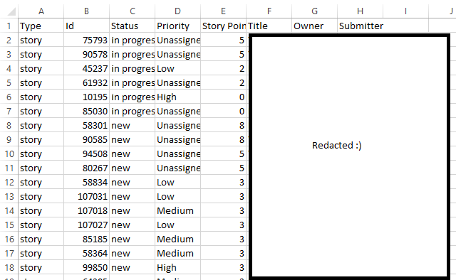

I am currently a Software Development Intern at Intel's Data Center Solutions Group, where I code project management and automation tools for the server motherboard firmware validation team. During the school year, I study computer science at Stanford University, work on a potpourri of projects with my friends, and generally have an awesome time. I compete regularly in programming contests, so I have a strong background in CS theory even for a Stanford student.
I build useful things.
Potential impact is one of the biggest things that I look for in any opportunity. Software, in my opinion, should be a tool that enables people to accomplish more.
Learning is my job.
And I'm pretty good at it, too. Even if I don't have the experience you're looking for, you can count on me to familiarize myself with your project and workflow in record time.
An invaluable training tool for extreme martial artists, ComBoy intelligently generates valid move sequences based on the user's desired length and difficulty. Comprehensive settings and tweaks allow users to tailor the generated combinations to their own style or emphasize certain moves and transitions, thereby optimizing their training time. Combos are serialized as JSON, so users can import, edit, and share their favorites.
ComBoy is compatible with Android 1.6+, and the source and .apk are available from my github.
Rational Team Concert Query App

A fellow intern and I wrote this app for our manager at Intel, who wanted a one-click portal to all the important project information. The app's front-end is an excel spreadsheet with some Visual Basic scripting that handles user input and parses the query results into nice looking charts (which I can't show here because of Intel's IP protection policies). Its back-end is a java program that runs the specified query and creates a .csv file with the results.
Helix HSL
Color picking for humans
Standard
Helix-Saturated
Helix
The RGB color model is great for communicating to computers, but it's not so great when it comes to humans. Can you tell what #8FC0E3 will look like? (Hint) I can't either, unless I have the computer show me first.
The HSL color model provides a more intuitive way to choose a color, where instead of red, green, and blue components you specify a color's hue, saturation, and luminance. However, standard HSL still falls short when you have to create a color theme. Switch the color bar to standard mode and look at the secondary colors (yellow, cyan, and magenta). Notice how jarring they are? At a given luminance, standard HSL gives different intensity levels to different hues. Switch back to helix HSL and you'll notice that's no longer a problem.
The helical spectrum is not only prettier and more intuitive, but because of its guarantee of constant luminosity it's also a better fit for graphic design and data visualization!
Helix-Saturated is a middle-ground between the standard and helical HSL color models for use when luminance uniformity is not absolutely necessary. It combines the smoothness of the helical model with the pop of the standard model, and it manages to be neither boring nor jarring.